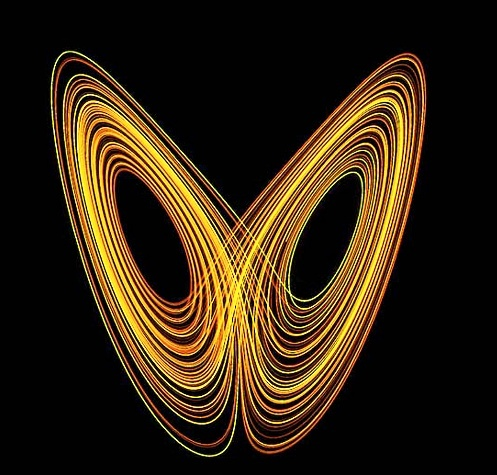

Teoría del Caos
Michael Eduardo Perez Rodriguez
Nicoll Alejandra Moreno Orjuela
Un viaje al corazón de la complejidad y el orden oculto
Autores Principales
Edward Lorenz
Meteorólogo y matemático, pionero de la teoría del caos y descubridor del "efecto mariposa".
Benoit Mandelbrot
Matemático conocido por su trabajo en la teoría fractal y su aplicación en la teoría del caos.
Mitchell Feigenbaum
Físico matemático famoso por el descubrimiento de las constantes de Feigenbaum en la teoría del caos.
Aportes Principales
Efecto Mariposa
Pequeñas variaciones pueden provocar grandes cambios en sistemas complejos.
Fractales
Patrones geométricos que se repiten a diferentes escalas, revelando la estructura del caos.
Atractores Extraños
Patrones complejos que emergen en sistemas caóticos, mostrando orden en el aparente desorden.
Aplicaciones en Diversas Áreas
Meteorología
Mejora en la comprensión y predicción de patrones climáticos complejos.
Economía
Análisis de mercados financieros y comportamiento económico no lineal.
Biología
Estudio de ecosistemas, poblaciones y sistemas fisiológicos complejos.
Psicología
Comprensión de comportamientos humanos y dinámicas sociales complejas.
Ingeniería

Diseño de sistemas robustos y análisis de fallos en estructuras complejas.
Astronomía

Estudio de sistemas planetarios y dinámica galáctica.
Datos Curiosos sobre la Teoría del Caos
- El término "efecto mariposa" se originó de la pregunta: "¿Puede el aleteo de una mariposa en Brasil provocar un tornado en Texas?"
- Los fractales, un concepto clave en la teoría del caos, se encuentran en la naturaleza en formas como copos de nieve, helechos y sistemas circulatorios.
- La teoría del caos ha influido en campos tan diversos como la música electrónica y el arte generativo.
- El "juego del caos" es un método simple para crear fractales usando solo un dado y un lápiz.
- La teoría del caos ha sido utilizada para analizar y predecir terremotos y otros desastres naturales.
Relevancia Actual en el Área Organizacional
La teoría del caos sigue siendo extremadamente relevante en el ámbito organizacional actual por varias razones:
Gestión de la Incertidumbre
En un mundo empresarial cada vez más volátil e incierto, la teoría del caos proporciona un marco para entender y navegar la complejidad.
Innovación y Creatividad
La teoría fomenta el pensamiento no lineal, crucial para la innovación disruptiva en las organizaciones modernas.
Adaptabilidad Organizacional
Ayuda a las empresas a desarrollar estructuras más flexibles y adaptativas, esenciales en el rápido cambio del mercado actual.
Toma de Decisiones
Proporciona insights sobre cómo pequeñas decisiones pueden tener impactos significativos a largo plazo.
Gestión de Equipos
Ofrece perspectivas sobre la dinámica de equipos y cómo fomentar la auto-organización y la emergencia de nuevas ideas.
Estrategia a Largo Plazo
Ayuda a las organizaciones a prepararse para múltiples escenarios futuros en lugar de depender de predicciones lineales.
"En resumen, la teoría del caos proporciona a las organizaciones modernas las herramientas conceptuales necesarias para prosperar en un entorno empresarial cada vez más complejo e interconectado. Su aplicación fomenta la resiliencia, la innovación y la adaptabilidad, cualidades esenciales para el éxito en el siglo XXI."